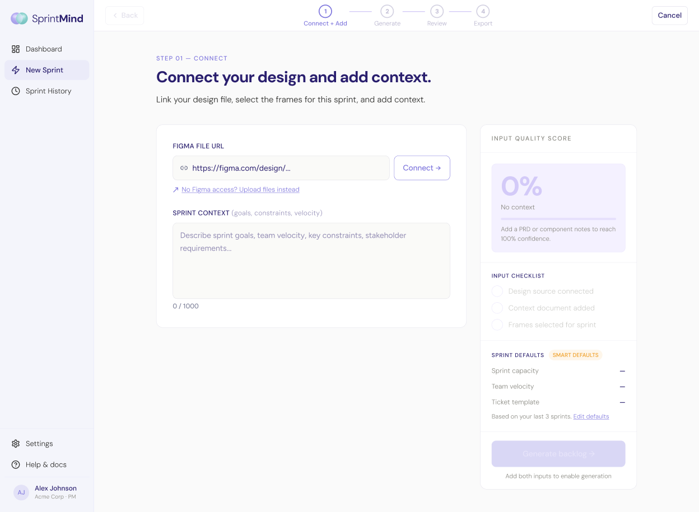
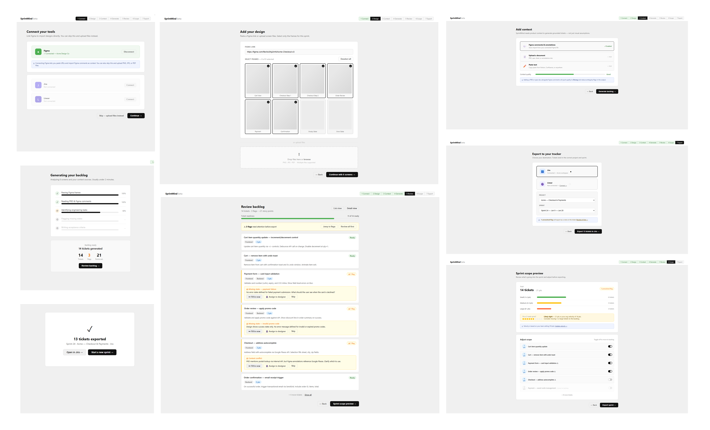
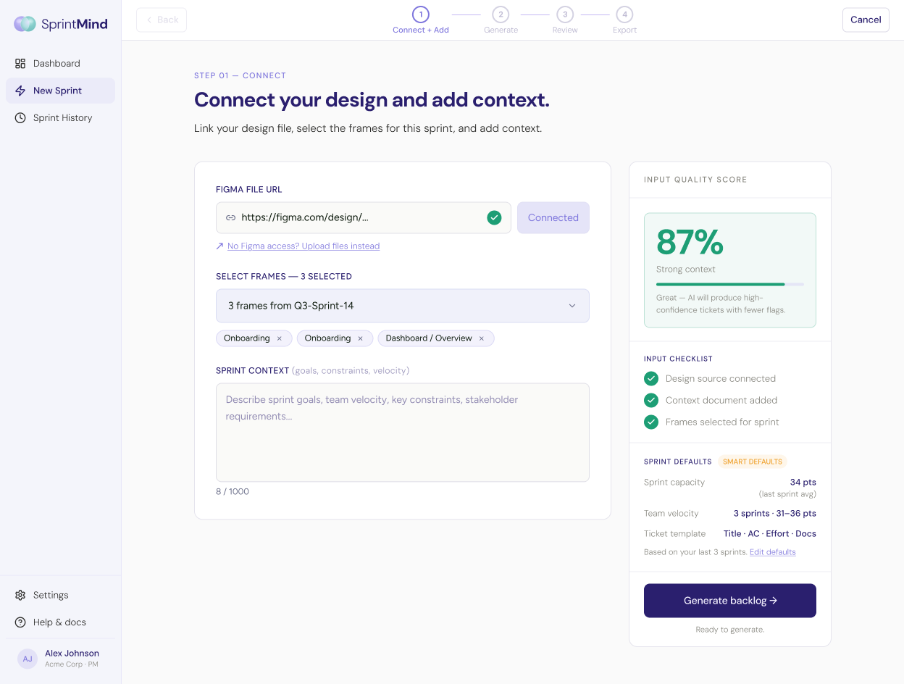
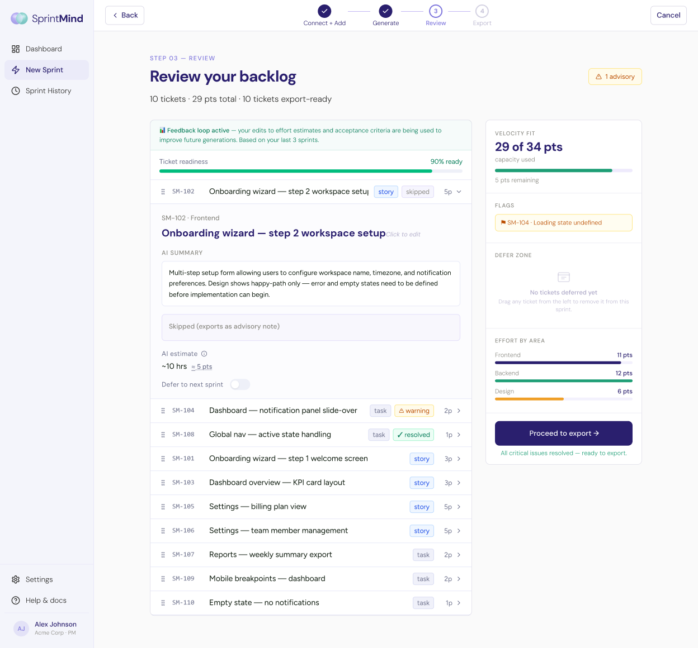
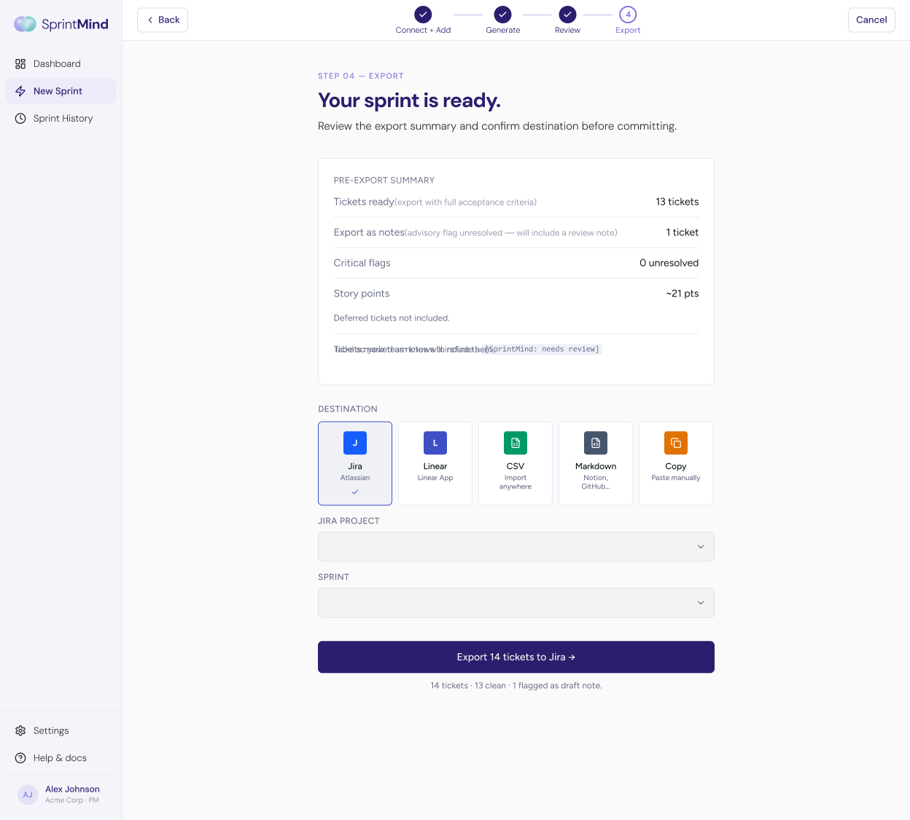

How I went from PM interviews to shipped product — and what the hardest problem taught me about designing AI tools people actually trust.

Why do PMs spend 6 hours on work that should take minutes?
Before touching any design tool, I interviewed two PMs — one at a mid-size SaaS team, one at a scale-up. Both confirmed the same picture: every other Monday, Figma open, Jira open, a blank Notion doc open, and 4–5 hours of manual translation work before sprint planning could start.
They weren't slow. They were doing work that a tool should absorb. No product connected design intent to ticket structure. Jira doesn't read Figma. Figma doesn't write tickets. The PM was the bridge, every sprint, on their own.
By the time sprint planning starts, I've already spent half a day writing tickets. I'm translating design intent into engineering scope with no real signal — just my best guess.
I started with two structured PM interviews. Both confirmed the same pattern: 4–5 hours per sprint lost to translation work, no reliable method for complete ticket decomposition, and context leaking between every tool.
From there I benchmarked 6 tools — sprint planning, ticket generation, and design handoff. None connected design signals to engineering scope together. The interviews confirmed the pain. The benchmark confirmed the gap. SprintMind was the only possible answer to both.
User interviews + competitive analysis| Tool | Reads Figma | Generates tickets | Eng. context |
|---|---|---|---|
| Linear | — | Partial | — |
| Jira | — | — | — |
| Notion AI | — | Partial | — |
| Height | — | Partial | — |
| Zeplin | ✓ | — | — |
| SprintMind | ✓ | ✓ | ✓ |
Not one that generates output. Not one that looks impressive in a demo. One that a PM will use at 6pm on a Thursday when a sprint is tight and the stakes are real.
"Trust isn't built by the AI being right. It's built by the AI being honest about where it isn't sure. Designing I don't know states turned out to be harder — and more important — than designing the generation itself."
— The insight that reframed the entire productBefore designing any screen, I defined what SprintMind should feel like. Starting with word and concept association, four brand attributes emerged: Intelligent Speed, Trustworthy Precision, Invisible AI, and Bridge Builder. I then explored four visual directions — testing how each attribute translated into a real visual language. The combination of Warm Editorial and Holographic Light won: human enough to feel trusted, structural enough to feel intelligent. The first flows were sketched in Claude Artifacts, then refined into wireframes before any pixel-perfect work began.
Brand concept + wireframes + visual direction
With the visual direction confirmed, I locked the design token system before building any screen — color, type, spacing, semantic states all defined first. The prototype followed a deliberate tool progression: first flows built in Claude Artifacts, interactive prototype in Lovable, final high-fidelity design in Figma Make. Each tool had a specific job, and each handoff was a forcing function to refine what wasn't working.
Claude Artifacts → Lovable → Figma MakeRound 1 surfaced that the 7-step flow was too heavy — I was designing for completeness when the goal was speed. Collapsed to 4 steps. Round 2 asked the question I had no answer to: "What does the AI do when it doesn't know something?" That question became the flag system — the most important design decision in the product. Round 3 was a user testing session that restructured how the landing page proved its own claim.
3 rounds of user testing + iterationLink your Figma file and describe the sprint context, goals, and constraints.
AI reads your designs and generates a structured breakdown of each ticket.
Edit, flag, and validate tickets with confidence scores and missing state alerts.
Push reviewed, approved tickets directly to Jira with one click.



After the first prototype review, a peer pointed out something I had rationalized away: the AI would sometimes generate a ticket for a screen that had no error state defined. The output would look correct, but it would silently block development.
Every other tool in the benchmark showed a result and stopped. I decided SprintMind should show a result and a confidence score — surfacing the 41% as clearly as the 94%. That honesty is what earns the PM's trust. Hiding uncertainty would have been a design failure disguised as polish.
"The wow moment gets the demo. The flags get the trust. You need both."
— Learned during user testingSprintMind's principle: the AI suggests, the PM decides. Nothing commits without a human review. Working on it, I noticed the same dynamic governed my own process. The AI was fast at everything that drained me. The judgement stayed mine.
No single AI tool did everything. Claude held the research and writing. ChatGPT proved stronger for wireframe concepts. Midjourney refined the visual tone. Figma Make shipped the prototype once I had a precise prompt and a working vision board.
I went in thinking the problem was ticket quality. PMs told me it was time. That single shift changed the product's success metric, the flow, and what "done" meant.
Synthesized 2 hours of notes into a clean problem frame and drafted the PRD. That same week it forgot a user's job title twice and invented a competitor that doesn't exist.
ChatGPT opened UX directions I hadn't considered. The logo fought me all week. Described the outcome, not the component — that's when it clicked.
Figma Make jumped in quality the moment I gave it a brand reference and a clear goal. The prototype landed at a high level on the first try.